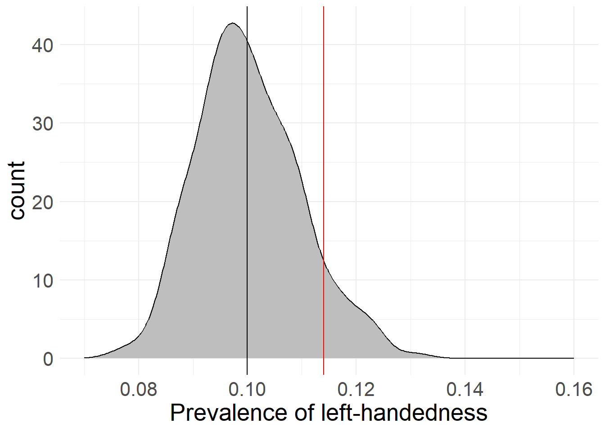
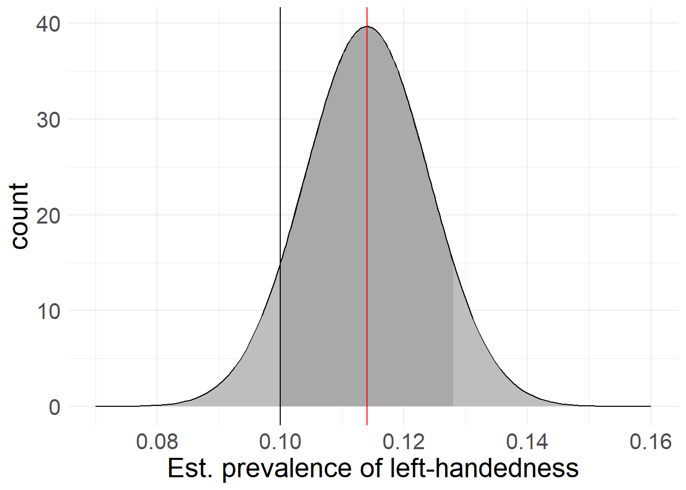

4 Effect Significance
This page contains …
… a discussion of effect significance and standard errors, as well as some annoyed and semi-coherent ramblings as to when significance matters, and why some people seem to just love seeing stars.
Samples and Analyses
Okay, let’s start slow.
We’ve now seen that random sampling - if applied correctly - can be a way to get close to the “true” and usually unknowable values of some parameters or variables in the overall populations. However, while this increases the probability of landing close to the actual value, there is no guarantee of this. Going back to the left-handed example, we will very rarely land on the “true” value of 10% (in our example) - instead, if we conduct multiple studies with random sampling, we might find left-handed rates between let’s say 8% and 12%, with some samples reporting even more extreme deviations from the “truth”.
This is a problem, because the samples are technically correct, we were just unlucky in drawing them. This demonstrates that just because we do everything right in drawing our sample, we still might end up with an incorrect result!
We therefore need to extend our results reporting by another measure, which should ideally report something like a degree of confidence in the assertion that our obtained results are close to the underlying population’s “true” values. And this is exactly what significance reporting is all about.
Flipping the Script
There’s a couple of issues with this simple idea though. To assess how large the difference between our sample and the underlying population is, we need to know the “true” value’s, well, value. And furthermore, to assess how likely or unlikely it is to obtain our sample’s value (i.e. the width of the distribution in our simulation), we would need to know the values of hundreds - if not thousands - of other samples to get to a robust result, because of the spread of values we talked about on the last page.
Luckily, we don’t have to do that. If you recall what I said about the size of the distribution depending on the number of cases we examine, you won’t be surprised to hear that we can approximate the distribution’s width given our sample’s size. Clever mathematicians have figured out ways to estimate this degree of deviation - usually called the standard error - using only information about the sample, without any knowledge about “true” values required. We will get back to this concept at a later point, once we’ve established some of the mathematical and conceptual groundwork for actually calculating it.
With this knowledge about our sample’s mean and the sample’s mean’s standard error, we can now go back and - in a way - flip the script on how we approach things. Instead of starting from the “true” value and the way samples spread around it, we can calculate a probability distribution showing where other samples from the same population should show up if our sample is an average sample of the population:
library(ggplot2)
# load sampling function from previously
sample_left <- function(rep_n, sample_n){
df <- data.frame(sample = seq(1, sample_n), perc = NA)
for(i in 1:sample_n){
left <- sample(c(1, 0), rep_n, replace = T, prob = c(0.1, 0.9))
df$perc[i] <- mean(left)
}
return(df)
}
# sample distribution around known "true" value
left_1000 <- sample_left(1000, sample_n = 250)
# singular sample for example
set.seed(19538) # keep randomness in check
sample_1000 <- data.frame(n = seq(1, 1000),
left = sample(c(1, 0), 1000, T, c(0.1, 0.9)))
# calculate sample mean and std.error
sample <- data.frame(mean = mean(sample_1000$left),
se = sd(sample_1000$left)/sqrt(1000))
# plot "true" distribution
ggplot(left_1000, aes(x = perc)) + geom_density(bins = 30,
fill = "gray", colour = "black") +
geom_vline(xintercept = 0.1) +
geom_vline(xintercept = sample$mean, colour = "red") +
scale_x_continuous(limits = c(0.07, 0.16)) +
labs(x = "Prevalence of left-handedness", y = "count") +
theme_minimal() + theme(text=element_text(size=20))
# plot estimated distribution
ggplot(left_1000, aes(x = perc)) +
geom_area(stat = "function", fun = dnorm, fill = "gray", colour = "black",
args = list(mean = sample$mean, sd = sample$se)) +
geom_area(stat = "function", fun = dnorm, fill = "dark gray", colour = "black",
args = list(mean = sample$mean, sd = sample$se),
xlim = c(0.1, sample$mean + (sample$mean - 0.1))) +
geom_vline(xintercept = 0.1) +
geom_vline(xintercept = sample$mean, colour = "red") +
scale_x_continuous(limits = c(0.07, 0.16)) +
labs(x = "Est. prevalence of left-handedness", y = "count") +
theme_minimal() + theme(text=element_text(size=20)) 

I have manually chosen a case where our source estimate (based on a sample of 1,000 “people”, red) deviates noticably from the “true” average (black). As you can see in this example, the mathematical estimation based on the sample lines up pretty well with the actual deviations of 1,000 samples drawn from the population when it comes to the distribution’s width. This means that if we were to actually capture the “true” value with our sample, the standard error would be a great way to estimate how much other (hypothetical) samples would deviate from our chosen sample.
Because it’s based on a mathematical formula, the sample’s distribution looks way smoother than the “true” distribution (remember that that is based on actual sampling of 1,000 samples with 1,000 cases each). If we were to increase the number of samples drawn from the “true” distribution, it would appear smoother than here - I’ve simply opted to keep it to “only” 1,000 samples here.
There is just one more flaw in our logic. I’ve painted in the “true” value of 10% into the estimated prevalence so we can judge how far off we are - but as we’ve established before, there’s no way of knowing what this true value is beforehand, meaning this is a process you could never do with real research data!
However, we can use what we’ve now created and theorized to create an approximation of this measurement of closeness. It will just require one more methodological twist…
Twist on a twist
Before we go on with this, let’s highlight where we are right now. You’ll see later why this is important.
We started with a theoretical population that presumably includes everyone or everything touched by our research hypothesis.
We chose a data collection method that presumably captures every part of the theoretical population relevant to our hypothesis.
We took a sample from the population using our research method, which presumably includes random distributions of all parameters and variables important to our hypothesis.
We then stated that this sample is presumably representative of the average sample drawn from our population.
What this gives us is an estimated value for our chosen parameter as well as a probability distribution for deviating values. Based on these values, we can now go ahead and calculate the likelihood of specific values to appear given our sample.
Here’s what I mean by this: As we’ve seen here and in our previous simulations, if the sample size is big enough, most samples seem to fall very close to the actual population’s value. In fact, many of the samples almost perfectly overlap with the actual population mean, while deviations from the population mean in all directions get less and less likely the more extreme they are. This bell-shaped curve we can observe here has it’s own name - the Normal Distribution - and we will encounter it pretty often in the following pages.
If we take our sample value (it’s 11.4% left-handedness by the way) as the center of a simulated distribution - meaning we treat it as if were the true population value, other samples would tend to fall relatively close to it, just like with the the true value in our previous simulations.
That means if someone else comes along with an estimated 12% of left-handedness, we can accept that as pretty likely, since it’s relatively close to our sample’s result. If however another study claims 50% left-handedness, that should raise some red flags - differences this large are extremely unlikely, and therefore someone has probably fucked up somewhere.
Quantifying Differences
I’ve said before that these estimates can form the base of a probability distribution - and now you can probably see why: While most samples tend to land close to the true value, there is still no guarantee that any random sample will actually hit the true value perfectly (i.e. we get a sample that exactly results in our “true” value of 10.0000…% left-handedness) - or even at all. We therefore operate on a continuum between a 0% chance of perfectly hitting the truth down to every decimal and a 100% chance of getting any result at all.
The only footholds we have is that it seems based on our simulations that a) most samples end up very close to the actual value and b) deviations in both directions are equally likely.
You might have noticed that I’ve started dropping the quotation marks around the “true” population value. This is because they refer to different concepts: the “true” population value (with quotations) is an unknowable value in a specific distribution - in our case left-handedness - while the true population value (without quotations) is describing a hypothetical concept that may be conceivable, but has no actual, measurable value.
With these footholds and our previous estimations, we can calculate the probability of any sample ending up in a specified range around our distribution’s center. Using our sampled 11.4% and the associated standard error based on the sample’s size, we could for example calculate the estimated probability of another sample returning a value between 11% and 12% left-handedness. In this case, 11% and 12% would be the cut-off values for our calculation.
Because we established that sample deviations seem to appear equally in both directions, we usually take the same cut-off value for both sides and set it relative to the calculated distribution’s mean. In our example, this would mean that rather than calculating the probability of landing between 11% and 12%, we would instead calculate the probabilities between 11% and 11.8% or 10.8% and 12% left-handedness respectively, to keep both sides even. This also makes our reporting job easier, as we only have to report the deviation, instead of the actual values (which would be 0.4% and 0.6% respectively here).
Of course, these cut-off points can be completely arbitrary based on our needs. We could for example take the “true” value of 10% as a cut-off point, meaning that our probability interval would go from 10% on one side to 12.8% on the other. In our plot above, this would be the dark gray area, with the black line serving as cut-off at the “true” value of 10%.
If we now calculate what proportion of space under the distribution is smaller than the cut-off vs. the total (i.e. the dark gray shaded area vs. everything dark and light gray) we get a percentage value (ex. 70% of the area is dark gray). This percentage value tells us the proportion of (theoretical) samples from the total population that we expect to land inside the darker shaded area delineated by the cutoff-point, with the cutoff-point being any arbitrary value on the variable’s scale. We can also flip this around to claim that with 70% “inside” the area, this means that there is only a 30% chance of a sample being as far or farther from our mean than our chosen cut-off points!
Here’s where we can start to quantify our results: although we may not know anything about the actual, “true” distribution of left-handedness, we could for example make educated guesses based on previous research. If we found that previous research stated a left-handedness value of 8%, we could treat this value as one such cutoff-point, and see where it falls on the proportion scale. If we found out that - based on our sample’s distribution - 99% of predicted samples would fall in the interval 8%-(11.4%)-14.8%, this would mean that about 1% of samples would lie as far or farther away from our results as the previous research’s 8%! Because this is a very unlikely result, we would have grounds to claim that something is wrong here.
Keep in mind that this doesn’t have to mean that something is amiss here. We’re dealing with probability and chances, so everything is always somewhat possible. Also, this doesn’t mean that all prior research is trash just because we’ve found a discrepancy - it could also mean that there’s something wrong with our approach, as opposed to everyone else’s prior work.
If you think back to the first chapters, this might seem familiar to you. In fact, what we’re doing here is applied falsification: As discussed previously, we can never claim to have found the “proven” or “true” value of left-handedness, but we can try our best to disprove the established proportion given by prior research (or any other value for the proportion). In this case, we can use the 1% probability to convincingly argue that the prior value of 8% is probably an underestimation - although even that can never be decisively proven!
Confidence Intervals
Depending on the field and research tradition you’re in, there are custom guidelines for how different something has to be in order for you to claim that a difference is significant. Usually, values should lie outside a zone than encapsulates at least 95% of the calculated sample distribution in order to claim significant difference:
# actual value within probability range (difference not significant)
ggplot(left_1000, aes(x = perc)) +
geom_area(stat = "function", fun = dnorm, fill = NA, colour = "black",
args = list(mean = 0, sd = 1)) +
geom_area(stat = "function", fun = dnorm, fill = "gray",colour = "black",
args = list(mean = 0, sd = 1),
xlim = c(-1.96, 1.96)) +
geom_vline(xintercept = 0.9) +
scale_x_continuous(limits = c(-3, 3)) +
labs(x = "Value distribution with 95% intervals", y = "count") +
theme_minimal() + theme(text=element_text(size=24))
# actual value outside probability range (difference significant)
ggplot(left_1000, aes(x = perc)) +
geom_area(stat = "function", fun = dnorm, fill = NA, colour = "black",
args = list(mean = 0, sd = 1)) +
geom_area(stat = "function", fun = dnorm, fill = "gray",colour = "black",
args = list(mean = 0, sd = 1),
xlim = c(-1.96, 1.96)) +
geom_vline(xintercept = -1.8) + geom_vline(xintercept = 2.5) +
scale_x_continuous(limits = c(-3, 3)) +
labs(x = "Value distribution with 95% intervals", y = "count") +
theme_minimal() + theme(text=element_text(size=24))
# actual value outside probability range, one-sided (difference significant)
ggplot(left_1000, aes(x = perc)) +
geom_area(stat = "function", fun = dnorm, fill = NA, colour = "black",
args = list(mean = 0, sd = 1)) +
geom_area(stat = "function", fun = dnorm, fill = "gray",colour = "black",
args = list(mean = 0, sd = 1),
xlim = c(-1.645, 10)) +
geom_vline(xintercept = -1.8) + geom_vline(xintercept = 2.5) +
scale_x_continuous(limits = c(-3, 3)) + theme(text=element_text(size=20)) +
labs(x = "Value distribution with 95% intervals", y = "count") +
theme_minimal() + theme(text=element_text(size=24)) 
Depending on the quality of your data and the severity of your conclusion, you can argue for different confidence levels, as they are - again - entirely arbitrary. Especially for statistical analyses with low case numbers (< 500), you will find some studies going to 90% confidence (you can tweak this even further with one-sided tests, see below).
If you’re dealing with life-and-death situations like in medical trials or with something that has the potential to revolutionize science as we know it (nuclear physics, …), it might be better to opt for a stricter confidence level of 99% or even 99.9%, to decrease the risk of mis-interpretation.
In these examples, the gray area encompasses 95% of the probable sample distribution. In the first case, our cut-off point is not different enough to land outside of the confidence interval, meaning any difference between it and our sample values could still be coincidental, based on different samples from the same data and therefore isn’t significant.
The second case shows two cutoff-points, of which one lies outside the 95%-range while the other does not. In this case, we could claim reasonable confidence in a difference between our sample and the right-side cutoff-point. While there is still a chance that all three values (sample mean and both cutoff-points) come from the same underlying data, this difference is big enough to suspect that something is probably amiss.
The third example shows something else entirely: Here, we rephrased our question about significance somewhat: Instead of testing both sides of the distribution (i.e. asking “is something significantly smaller or larger than our result?”) we only focus on one side, and ignore the other side.
This leads to an improvement in confidence intervals: 95% confidence and an equal split leaves 2.5% of samples below and 2.5% of cases above our calculated value. If we only focus on one side (i.e. we ask “is something significantly smaller than our result?”), we can shift the entire 5% “rest” over to that side. This is what’s shown here. Because we only focus on if something is significantly smaller, the right-side line is now non-significant, while the left-side line lies outside the gray zone - even though the right-side line is farther from our sample’s mean! Based on the way they’re constructed, these types of tests are also called two-sided or one-sided significance tests, with two sides (or tails) if measuring in both directions, and one if contrasting to only one direction.
Seeing stars
Instead of comparing data against arbitrary cut-off points, statistical programs usually compare your results against a pre-defined cut-off point: 0.
This is because most statistical analyses revolve around the answer to the question “Does X have an effect on Y?”, and since we can’t prove this (recall falsification), we instead try to dis-prove that X has no effect on Y - making zero the cut-off point we ideally want to fall outside of our confidence interval. This also covers inverted effects, since any journey from positive to negative (or vice versa) needs to cross 0 at some point.
As you might imagine, 0 will basically never line up perfectly with any pre-set confidence interval like “95%”, instead potentially producing weird or very small values. As such, it has become custom to represent significance with stars in analysis results, where more stars correspond to a “harder” test.
You will usually see these stars explained below the table of results, in a form like this: *p<.1. **p<.05. ***p<.01. In this example, one star (*) would mean that the remaining probability of randomly arriving at a value as far away as 0 based on the given result was 10% or smaller - a 90% confidence interval - with the same going for 95% (**) and 99% (***) confidence intervals respectively.
The Limits of Significance
Bear with me, this is going to be annoying.
You see, because significance is such a cool concept and because stars are easy to communicate (notice how I don’t use “understand” here), this is what many people look at whenever they use statistical methods without further thinking about the result. This also makes them the de-facto standard of any scientific reporting. But as you might have noticed already, this concept of significance is built on a foundation that can only be described as rickety at best and imaginary at worst.
This refers back to all the assumptions we made during the process of getting to the concept of significance. You know, the ideas of us reaching our target population, getting results that are representative of the actual average, presuming that we can generalize a probability distribution from our sample and all that jazz.
It turns out, it’s basically never the case that all these assumptions are met. Something is always going on somewhere that leads to skewed data or mis-interpretation of results. Does that mean everything we do is worthless? No. But it does mean that even the confidence intervals themselves are just estimations and not hard cutoffs! You can never be certain that your calculated 95% are the actual 95%!
You can estimate how likely it is for you to detect an actually real effect based on the effect’s theorized strength, your sample size and a couple other parameters. We will talk more in-depth about this concept (called statistical power) at a later time, but I want to mention it here already.
Still, just like everything else, this is a probability - and based on how much science is out there, even the most unlikely things will have happened somewhere at some point!
But wait, it gets even worse. This is where interpretation of the probability values matter (and also where we clear up my messy wordings in the last few paragraphs). You see, testing with a 95% confidence interval does not mean that we are 95% confident that the result we calculated is the correct result! Instead, all we state is that if one were to draw a similar sample and conduct the same analysis again, we would land inside our “gray area” 95% of the time!
Now you might argue that your regression did not produce a meager 95% confidence result, but instead left you with a confidence value of 99.99999%! To that I say “Great, good for you! But what does this actually mean?” All you’ve established now is that your calculated value is really, really likely to be less far away from your result than 0 is. What does this tell us? What benefit do we get from knowing that?
Now that we have everything in place, we can concisely state what confidence intervals and significance entail:
Given a set probability, a confidence interval is the range of potential values we would expect hypothetical re-calculations of our analysis based on other samples from the underlying population to take. This probability distribution is based on the assumptions that
a) our sample is representative of the “true” population values and distributions and
b) that all remaining dynamics in the sampling process are completely random and non-systematic.
Confidence is usually measured against the value “0” and states the proportion of random samples that would be less far away from our calculated value than the distance between 0 and this value.
Here’s an interesting implication if you think this to it’s logical conclusion: Presuming a best-case where all our procedural assumptions about sampling hold as well as a 95% confidence interval, this would mean that around 5% of all published research depicts effects that are not actually “true” effects. Instead they are simply unlikely enough to have happened to be outside a non-effect’s 95% confidence interval!
And that’s the best case. Things can and will go wrong, if you notice them or not. There may be some unknown systematic effects that change the true population you can make claims about (people without internet, households where everyone works during your call times, …), or our sample could be filled with only one-sided outliers, ruining our results. Or, worst of all, we cherry-picked or data to achieve significant effects in the ways we wanted in order to achieve the stars required to get our work into scientific journals (this is also called p-hacking, and it’s an issue)!
But then what shall we do?
In short? I have no idea. Significance might not be the ideal measure of what’s going on inside our data, but it is readily-available in almost all statistical programs and functions, easy to interpret and - unfortunately - the currency that makes the scientific world spin.
I’m also not the first one to notice and address this issue: Over the years, scientists have cautioned against trusting significance too much (see ex. Cohen’s [-@Cohen1994] paper with the great title “The Earth Is Round (p < .05)”), and a semi-recent plea (Amrhein, Greenland, and McShane 2019) to be more careful about mis-interpretation of statistical significance gathered widespread support.
There are other approaches to measuring the meaning of an effect, but until they catch on, significance still reigns supreme. The only thing we can do is be cautious when we encounter effects that seem too good to be true, as there might be something fishy going on.
And also, don’t blindly trust in stars (this goes for real life and statistics!) - Just because one gets a star and the other doesn’t, that does not mean that an effect with a 90.01% confidence level is so much better than an effect with a 89.99% confidence level. In the same vein, non-effects do not necessarily disprove previous studies that found effects! Use your head and think about your results!
Last modified: 2023-09-20 11:15, R version 4.3.1
Source data for this page can be found here.